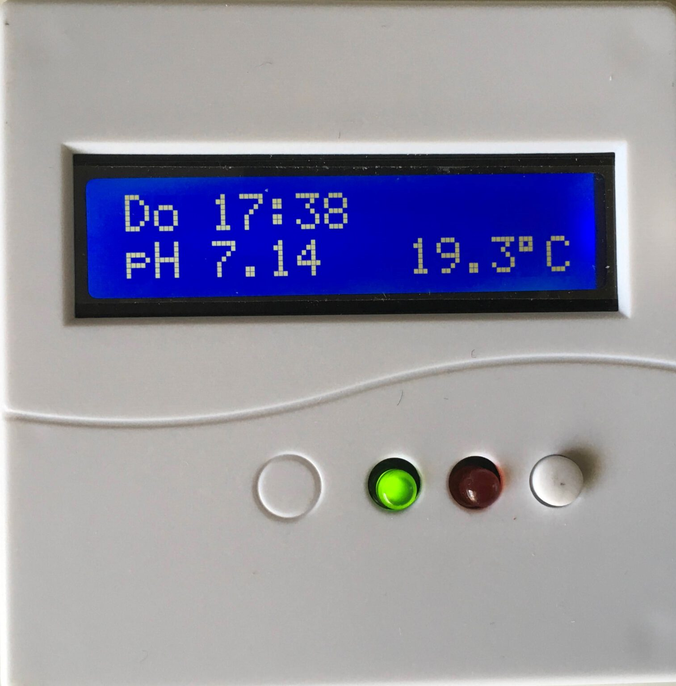
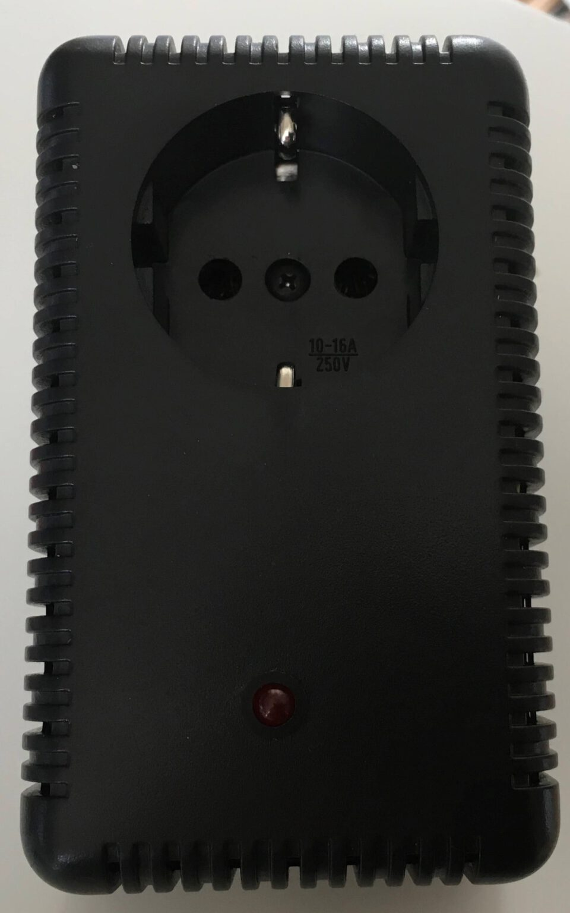

De Phunit is de belangrijkste WiFi component en zorgt er ook voor de integratie van de andere producten. De
phunit meet de PH en temperatuur van je aquarium.
Hij berekend ook de hoeveelheid van de opgeloste CO2 in mg/l.
Naast het laat zien van die
waarden op je telefoon/tablet etc
is deze unit ook in staat om je je pH te regelen.
De phunit kent twwee regel mogelijkheden
namelijk standaard (je stelt je pH in) of the autoPh mode. Het enigste wat je dan zelf moet doen is de waarde
van de KH via de druppel methode. Je wordt ook ondersteund bij het Kalibreren van je pH pen.
bepalen en in te vullen. De phunit zal nu de optimale CO2 waarde berekenen en daar op regelen.
Daarnaast kan de phunit alarmen genereren zoals bijvoorbeeld "Pen Kalibreren".
De phunit kun je dus aanschaffen en uitbreiden met de andere unit na gelang je hobby vorderd.
 Deze unit is ook een WiFi component en moet net als de phunit met je netwerk verbinden. Eenmaal verbonden regel de phunit de rest.
Je kunt het uitbreiden als je bijvoorbeeld een co2 installatie koopt (bv via markplaats etc) dan heb je alleen nog een relais-unit nodig. En deze unit wordt via een audio kabeltje aangesloten op je phunit en geef in het instelingen menu aan dat je een Co2 installatie hebt.
Zoals eerder al beschreven is dit een WiFi component, en die moet dus in je netwerk worden opgenomen. dit gaat als volgt:
De phunit is nu verbonden met je netwerk en is te breiken via http://aquarium.local Voor Leden van de verenigingis er een pagina beschikbaar om je aquarium gegevens overal te bekijken. Om nu te zorgen dat je overal ter wereld in app je je waarden kunt bekijken moet er nog een verbinding gemaakt worden met Hivemq. Dit lijkt wat omslachtig, maar het is gratis, voor iedereen Maar zo als eerder beschreven wordt daar bij geholpen bij het uitleveren en hoeft eenmalig gedaan te worden